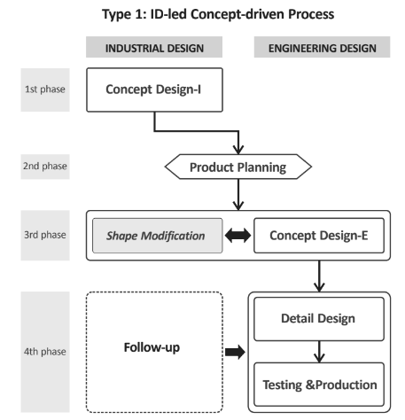
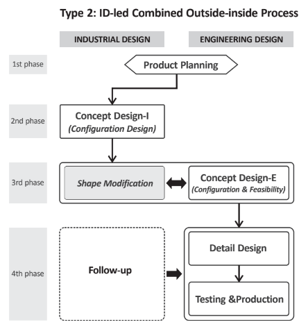
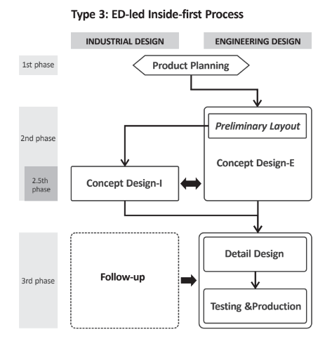
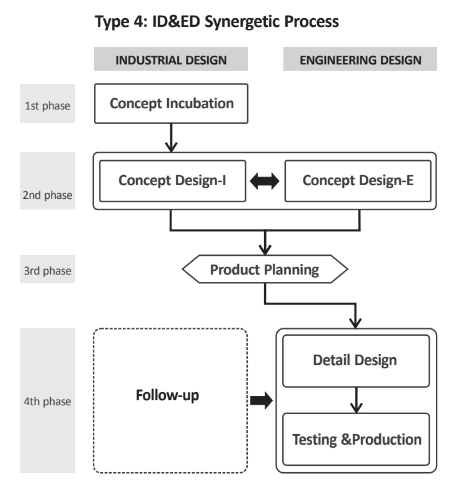

MechaEducFutureNeed <<
Previous Final project
Assignment 1
- Describe how to do an efficient random grouping for this course or do the roll calling randomly?
總結:在隨機分組及亂數抽點的程式中，利用Dart隨機分組源代碼中修改html來參考製作亂數分組。
影片連結: https://www.youtube.com/watch?v=XzxrBI_GRHY
- Describe how to prepare a portable Python programming system for Windows 10 64bit system to allow one the maintain CMSiMDE website,Pelican blog and Reveal blog and Reveal.js presentation on Github?
升級python3.8.2
1.先新增data資料夾，在data下新增資料夾py382、wscite432、portablegitwscite432、portablegit。
2.至https://www.python.org/downloads/release/python-382下載Windows x86 web-based installer。
3.開始下載，必須將pip選項取消，接著按下next並將檔案下載至資料夾py382。
4.到https://www.scintilla.org/SciTEDownload.html下載full 64-bit download，下載完成後解壓縮到資料夾wscite432。
5.建立新的start.bat及stop.bat。(下方)
6.下載MSYS2 msys2-x86_64-20190524.exe 至data下。
7.到https://bootstrap.pypa.io/get-pip.py頁面，滑鼠右鍵另存新檔到data下。
8.輸入指令
- python get-pip.py
- pip install flask bs4 lxml pelican markdown flask_cors leo
9.git clone自己的倉儲
start.bat

stop.bat

3.What do you need to know from http://www.coppeliarobotics.com/helpFiles/index.html to implement a four-wheeled robot?
章節: BubbleRob tutorial
從課堂中我們自己設計的BubbleRob機器人模擬中可以了解到一開始的基本設定與路徑，在此章節裡教導我們如何建造旋轉關節、力傳感器、機器人本體、障礙物…。重點是要如何有效的利用兩個關節和力傳感器來完成我們所希望的動作。
章節:Line following BubbleRob tutorial
在此章節，說明擴展BubbleRob機器人，了解如何設定視覺傳感器及正確的放置傳感器和路徑。
章節:External controller tutorial
說明幾種方法可以控制機器人或仿真，最方便的方法是編寫一個腳本來處理給定機器人或模型的行為，或編寫插件讓插件機制允許使用回調機制，另一種方法是通過ROS節點、BlueZero（BØ）節點，是使多個分佈式進程相互通信的便捷方法。
章節:Simulation dialog&Simulation
在這兩章節都在說明所有機器人建造完成後都需要進行的模擬，來確保設定程式上有無錯誤。
Assignment 2
- According to the material of Topic 0 and Topic 1, can you describe specifically what the mechanical design team need to do for accomplishing Assignment 1's four wheeled robot.
根據主題0和主題1的材料，您能具體描述機械設計團隊為完成分配1的四輪機器人需要做什麼。
Topic 0: DigitalProductCollaboration.pdf
總結:本文主要說明協同的重要性，並介紹合作流程和幾個設計協同工具，例如:FIGMA、MARVEL、ZEPLIN、QUIP。
Topic 0: IndustrialAndEngineeringProductDesignCollaboration
總結:本文提供四種的協同產品設計流程及特徵，來說明工程設計師和工業設計師如何來共同合作。




- What do you need to know from https://cyberbotics.com/doc/guide/index to implement a four-wheeled robot?
您需要從https://cyberbotics.com/doc/guide/index了解什麼 以實現四輪機器人?
1.建立四輪車的本體，給定尺寸並將車身拉高。
2.建立四輪車的輪胎，給定尺寸並調整其方向及位置。
3.建立馬達並調整其方向及位置。
4.複製其輪胎並將位置及結構設置好。
5.將四輪車的前輪馬達重新命名為right_motor及left_motor。
6.調整馬達轉動的速率20設置好。
7.將寫好的子程式加入車體。
8.開始用鍵盤控制四輪車進行測試。
影片連結: https://www.youtube.com/watch?v=Sj-ph36wrp4
Assignment 3
Topic 2: Mechatronic System Design
翻譯章節:MSModelingAndTFApproaches.pdf.
總結:此章節主要介紹如何設計機電一體化系統，並在設計上利用大量的數學建模來描述，主要分為兩種:連續時間數學建模及離散時間數學建模‧代表想要達到機電一體化並不容易，不僅需要先設計後建模再分析調整修改。
翻譯章節:MechatronicDesignCases.pdf.
總結:此章節說明如何進行機電系設計，如何能夠執行機電一體化系統設計的不同階段即解決控制問題並建立我們必須實時執行的控制規定。在其中利用許多數學公式去得到所需的方程式。
Topic 3: Mechatronic Future and Challenges
翻譯章節:MechaFutureAndChallenges.pdf.
總結:此章節讓我們了解到機電一體化的重要性、機電一體化過程中的挑戰及機電一體化未來的趨勢。機電一體化系統的主要動力是減少開發成本和時間，以及在成本和性能方面改進設計產品。
翻譯章節:MechaEducFutureNeed.pdf.
總結: 此章節主要介紹機電一體化教育來滿足未來需求及機電一體化全球趨勢及其對機電一體化的影響，技術系統的不斷發展與多個學科的更深層次的集成以及產品及其相關生產過程之間的詳細考慮是其中的一部分，並包含產品設計的主要趨勢。
MechaEducFutureNeed <<
Previous